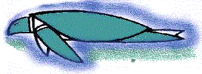

Search
Yahoo
Alta Vista
Wired Magazine's Hotbot
Google
SF Bay Information
SF Bay Yahoo
San Francisco Bay Guardian
Bay Area movie
listing from SFGate.
News/Reference
CNN Interactive
Wired Online
The New York Times Online
World Atlas
Altavista's Babelfish
Biology Resources
NCBI (National
Center for Biotechnology Information: PUBMED, etc)
Biologist's
Control Panel A LARGE list of links.
Novagen (More MoBio
web sites)
TIGR (The Institute for Genomic
Research)
Journals and Archives
Science Online
Physical Review Letters Online
Nature Online
PNAS (Proceedings of the National Academy
of Sciences)
Los Alamos Physics E-Print Archives
People
Dr.
Sarah L. Keller
Dr. William H. Calvin
Groups
 Participate in the SETI@Home project with your PC.
Participate in the SETI@Home project with your PC.

Ocean Arks
International Aquaculture and bioremediation, education and
research.
 Living Technologies, Inc.
The commercial effort affiliated with Ocean Arks International.
Living Technologies, Inc.
The commercial effort affiliated with Ocean Arks International.
 The Mars
Society
The Mars
Society
 The Sea Shepherd Conservation Society
The Sea Shepherd Conservation Society
Marine Biology Labs
MBL Marine Biological
Laboratory, Woods Hole, MA.
Cold Spring Harbor Labs New York.
Monterey Bay Aquarium Research
Insitute (MBARI) Monterey, CA.
Hopkins Marine Station,
Stanford University
Moss Landing Marine
Laboratories
Friday Harbour Marine
Laboratory University of Washington lab on San Juan Island,
WA.
Patents
IBM's Patent
Server
US Patent and Trademark Office (USPTO)
Patents after 1 Jan, 1976
Universities
University of
Washington
Stanford University
UC Berkeley , UC Berkeley Library Web Site , Physics Calendar , MCB Calendar
Music
Pink Martini
Squirrel Nut Zippers
The Bobs
Outdoor Stuff
REI
California Canoe and Kayak
Cal Sailing Club
Squaw Valley
Back to RHC's Hompage